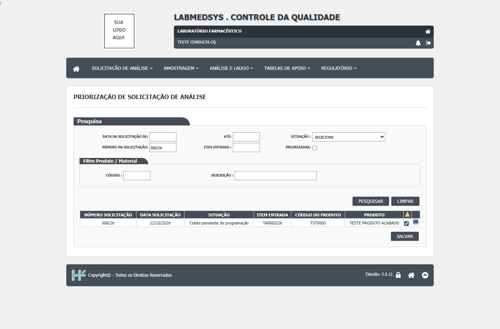
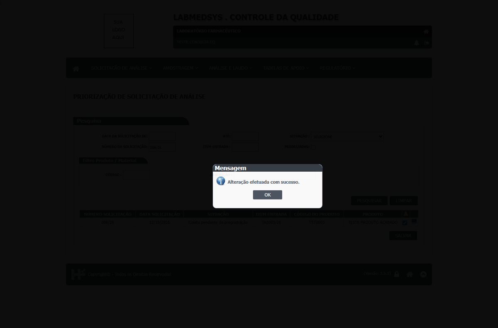

DV-CQ-028 · Perfil só de consulta prioriza solicitação
O usuário só de consulta marcou a 006/26 como priorizada e o Salvar gravou.
Como reproduzir o erro, passo a passo
- Entrar com o perfil só de consulta.
- Abrir Priorização de Solicitação Análise, pesquisar a 006/26, marcar Priorizada e Salvar.
Esperado
Recusar a gravação (e esconder o botão) para um perfil que só tem a consulta da tela; registrar a tentativa.
Obtido
"Confirma a priorização do(s) item(s)?" e "Alteração efetuada com sucesso."
Evidência (captura da tela)


DV-CQ-026 · Pequenos desvios de tela: teor sem faixa nem decimal, priorização de solicitação já liberada, mensagem repetida, menu duplicado e tela fora do menu em branco
(1) **Teor** do laudo: digitar "99,5" virou **995** e foi aprovado (sem limite de 100 % nem casas decimais). (2) **Priorização**: a solicitação 005/26, com laudo liberado, foi marcada como urgente ("Alteração efetuada com sucesso."). (3) **Programação de Análise** sem responsável: "Responsável não informado Responsável não informado" (mensagem repetida). (4) O **menu** mostra "Verificação de Amostragens" duas vezes (mesma tela, grupo Amostragem). (5) A tela **Consultar Coletas Pendentes de Programação** (fora do menu) abre **em branco**, sem título nem campos. (6) **Cadastros** com Ativo sem marcar: a unidade foi gravada como inativa e listada como "Nao" (sem acento).
Como reproduzir o erro, passo a passo
- Ver cada item na tela citada.
Esperado
Teor entre 0 e 100 com decimais; só priorizar o que não está liberado; mensagem única; menu sem repetição.
Obtido
Os comportamentos acima.
Evidência (captura da tela)